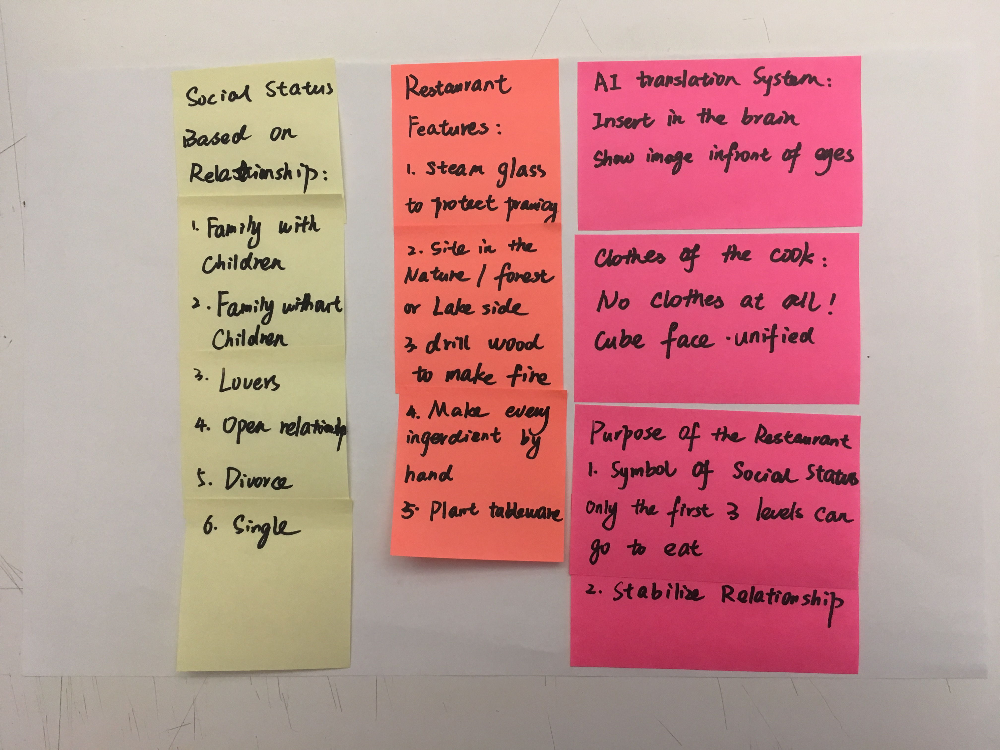

Group member: Yue Wang, Yusen Wu
Role: concept, illustration, motion, coding
Our main concept is culture misunderstanding. Based on this topic, we made future wheel map and persona.
This is a world that everyone has their own culture and languages. People have to use AI translation system in their body to help them communicate with each other.
People working in the service industry rely on AI translation system to help them satisfy customers' needs. If they do it well they will be very rich, otherwise, they will go bankrupt.
A good cook “communicates” with his customers to decide what they want to eat, during their communication progress, their AI translation system collect data of the customer and decide their customer’s preferences.
So everyone has to develop and innovate their own AI translation system to make it more intelligent and accurate to help them understanding what others are thinking about. To some extent, everyone is a geek, and they all have basic coding ability to maintain and manage their AI translation system.
And a fashion design company produces a clothing system that allows fashion designers to remotely design customized clothes for people, and made virtual clothes for them to wear.
People will respect their differences better and have better environment to show their personality. This is a world that encourage people to express and show their differences.
However, with people relying on the technology, people may lose their ability of feeling, perception and judgement as a human being, gradually losing connection with others.
Based on our world description, we put the main scene in a restaurant and made the following rules of our world:
· Nature was almost destroyed, and people change radically.
· Everyone has developed their own culture and language.
· People have to use AI translation system to communicate. However, the AI system can only translate their words but not their feelings.
· Because of people feeling hard to understand each other, although they have needs and desire to build connections with others, it is difficult for people to build social relationships.
· The government then decided that social hierarchy is determined by people’s relationships. People who have families and children are in the top of the society, while people who are single or divorced are put in the bottom.
· The only natural area is built as a love restaurant for people who have a stable relationship.
· In order to work in harmony, people become naked boxman to hide their personality.
We made some motions to visualize our world and the rules inside.
We made an online game for our zine. In this game, players need to choose the better answers for Jack to get more hearts of the girl and help him build a relationship and fulfill his dream of going to the love restaurant.